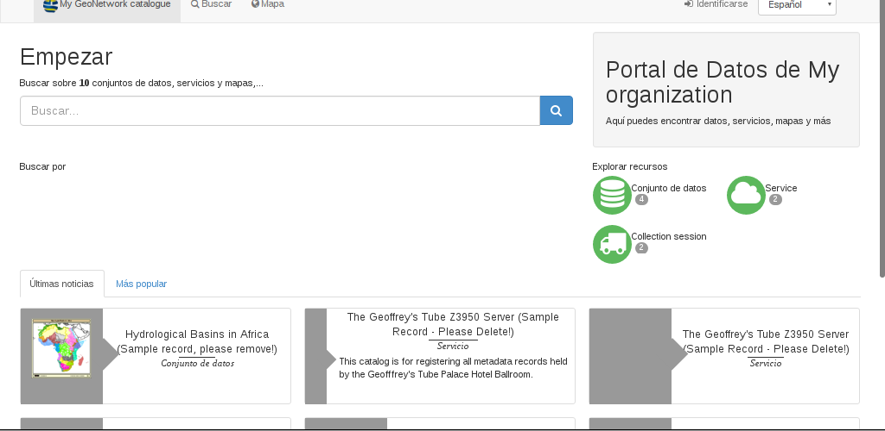
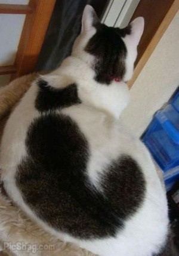
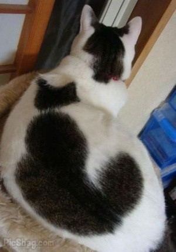
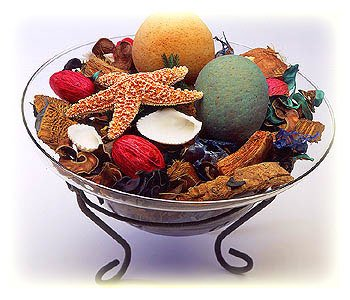
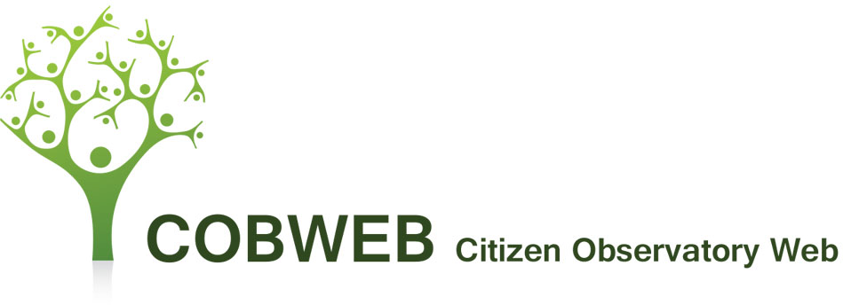
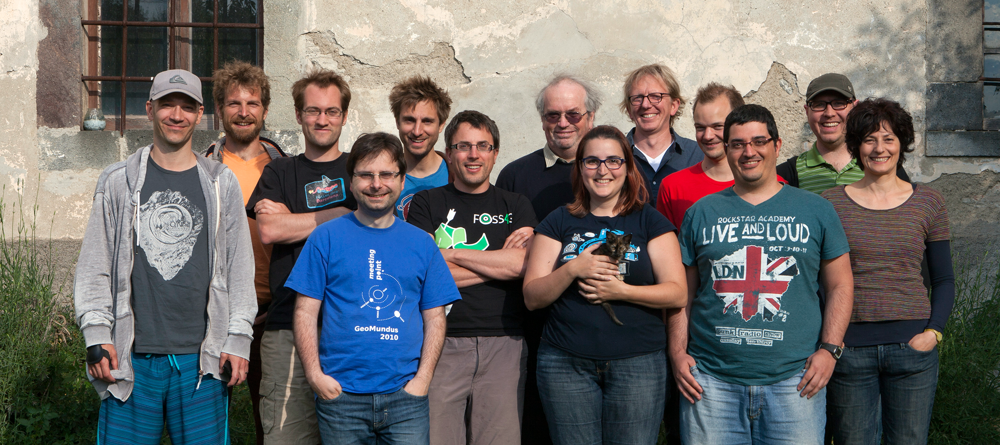

Quién soy yo y por qué me atrevo a hablar de esto
Portal de Datos Geográfico
GeoNetwork cataloga e indexa los metadatos
Edición directa e importación
Permite búsqueda simple y avanzada
¿Metadatos?
Un metadato es el dato que describe a otro dato
 

Machine-readable
Motor de Búsqueda del Catálogo
Como portal de datos geográficos, GeoNetwork tiene un potente motor de búsqueda de metadatos.
Todos los datos se guardan en una base de datos, pero para buscar se usa un índice Lucene
Importar contenido
OGC sugiere: CSW-t (Catalog Web Service)
Modo Asíncrono: Harvesting de otras fuentes
Servicios propios de GeoNetwork
Interfaz gráfica (editor)
Editor
Basado en esquemas XML
Validación por XSD y schematron

Wizards/sugerencias
Permite la edición directa de XML
CSW
GetCapabilities: descripción general del servicio
DescribeRecord: información del modelo de datos
GetRecordById: entradas por identificador
GetRecords: búsqueda usando filtros CQL o OGC
Transaction: creación, edición y borrado de registros
CSW
GeoNetwork implementa la versión 2.0.2

http(s)://___/srv/$language/csw(-*)
Exportar
XML
MEF
RDF y JSON-ld
Roles y Privilegios
GeoNetwork tiene cinco tipos de usuarios
Registered User
Editor
Reviewer (workflow)
User Administrator
Administrator
Los roles se definen por grupo
Ejemplo de Uso: Cobweb
Proyecto europeo
Ejemplo de Uso: Cobweb
Citizen Science
Redes de sensores
Crowd Data
Smart Rural
Smart city
Ejemplo de Uso: Cobweb
Centrado en reservas de la biosfera
Inundaciones, especies protegidas, cambio climático,...
Gales, Alemania y Grecia

Puente entre científicos y la ciudadanía
Programas especiales para escolares
Hacia dónde vamos
Más formatos opendata: json-ld, rdf, schema.org
Más UIs: mejor accesibilidad
Clusterización (SOLR)
Sugerencias editor
Hacia dónde vamos
Bolsena (Italia), junio 2016
